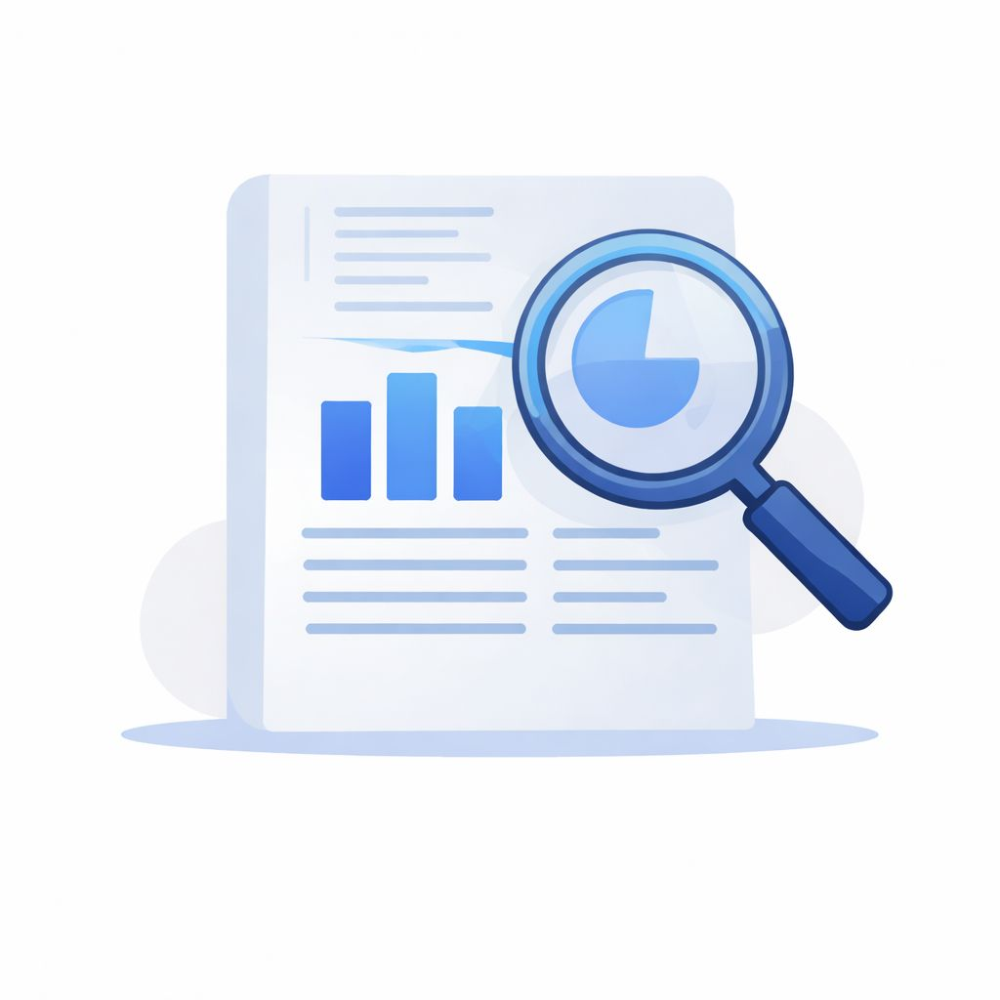
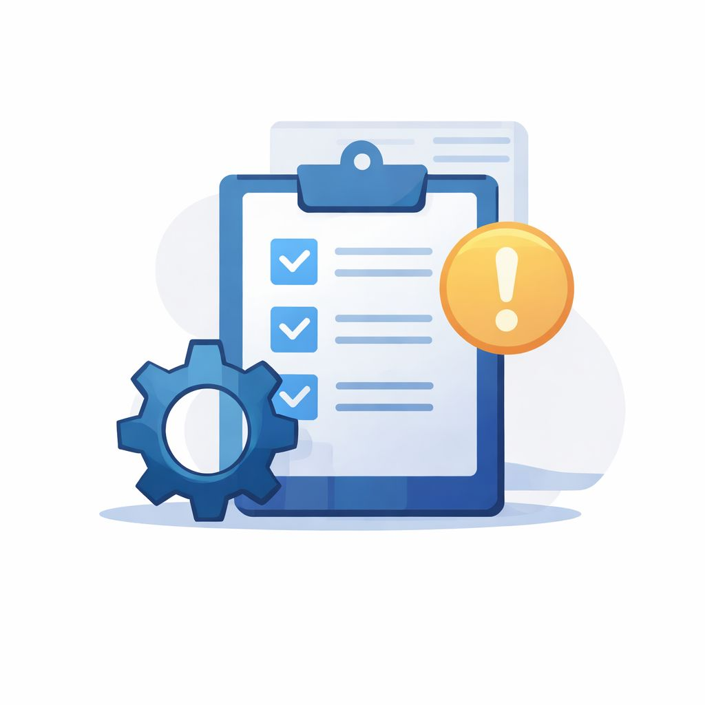

Helping Entrepreneurs and MSMEs improve business performance through structured analysis, operational understanding and practical decision support.

Review sales patterns, operational processes and inventory behaviour to develop a clear understanding how the business currently operates.

Identify inefficiencies, performance gaps and operational bottlenecks that limit business growth and profitability or decision clarity.
Examine business processes,sales, inventory, operational data and decision patterns to understand why specific problems occur and where improvements can be made.
Provide clear, actionable recommendations that help entrepreneurs and MSMEs improve operational performance and make better business decisions.